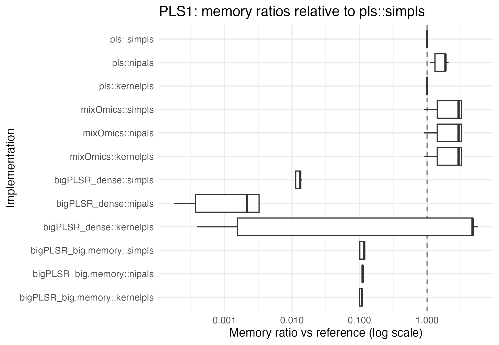
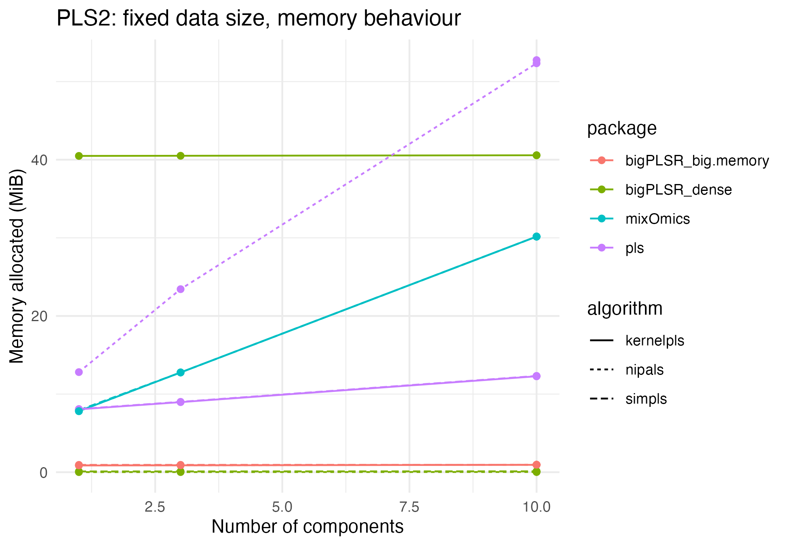
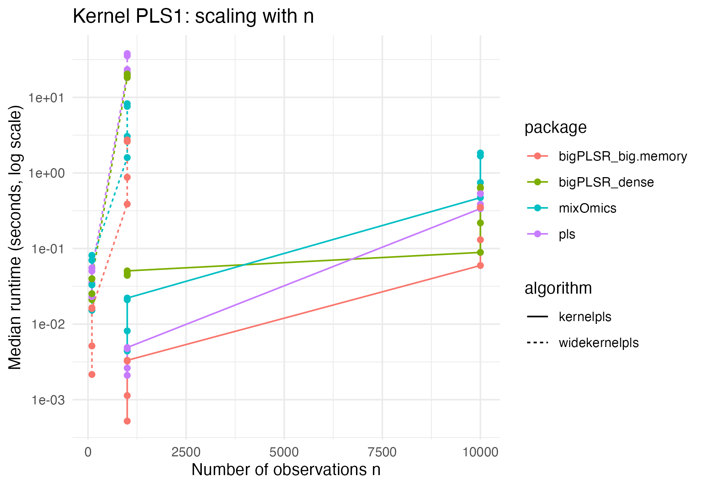

External PLS benchmarks for bigPLSR: detailed analysis
Frédéric Bertrand
Cedric, Cnam, Parisfrederic.bertrand@lecnam.net
2025-11-18
Source:vignettes/external-pls-benchmarks-long.Rmd
external-pls-benchmarks-long.Rmd
knitr::opts_chunk$set(
collapse = TRUE,
comment = "#>",
fig.path = "figures/benchmark-long-",
fig.width = 6.5,
fig.height = 4.5,
dpi = 150,
message = FALSE,
warning = FALSE
)
LOCAL <- identical(Sys.getenv("LOCAL"), "TRUE")Introduction
This vignette presents a more detailed analysis of the external
benchmarks stored in external_pls_benchmarks. The dataset
compares bigPLSR dense and streaming implementations to
reference PLS implementations available in other R packages.
The analysis is organised as follows.
- Section on the benchmark design and the structure of the dataset.
- Section on PLS1 behaviour, with emphasis on runtime and memory.
- Section on PLS2 behaviour, including wide response settings.
- Section comparing kernel based algorithms and wide kernel PLS.
- Short discussion and take home messages.
The code chunks are meant to be reproducible and can be adapted if you update or extend the benchmark dataset.
Benchmark design and data structure
library(bigPLSR)
library(ggplot2)
library(dplyr)
library(tidyr)
library(forcats)
data("external_pls_benchmarks", package = "bigPLSR")
head(external_pls_benchmarks)
#> task algorithm package median_time_s itr_per_sec mem_alloc_bytes
#> 1 pls1 simpls bigPLSR_dense 0.006045184 165.15626 104720
#> 2 pls1 simpls bigPLSR_big.memory 0.003586762 275.94176 895872
#> 3 pls1 simpls pls 0.002086736 469.94316 7479024
#> 4 pls1 simpls mixOmics 0.004478861 223.44869 7550384
#> 5 pls1 kernelpls bigPLSR_dense 0.044123503 22.66366 42461256
#> 6 pls1 kernelpls bigPLSR_big.memory 0.000521520 1733.62898 821328
#> n p q ncomp notes
#> 1 1000 100 1 1 Run via pls_fit() with dense backend
#> 2 1000 100 1 1 Run via pls_fit() with big.memory backend
#> 3 1000 100 1 1 Requires the pls package
#> 4 1000 100 1 1 Requires the mixOmics package
#> 5 1000 100 1 1 Run via pls_fit() with dense backend
#> 6 1000 100 1 1 Run via pls_fit() with big.memory backendThe key factors are:
-
task: PLS1 versus PLS2, -
algorithm: SIMPLS, NIPALS, kernel PLS or wide kernel PLS, -
package: implementation provider, -
n,p,q: data dimensions, -
ncomp: number of extracted components.
The performance measures are:
-
median_time_sanditr_per_secfor runtime, -
mem_alloc_bytesfor memory consumption as reported bybench::mark.
For the analyses below it is convenient to add a few helper variables.
bench <- external_pls_benchmarks %>%
mutate(
mem_mib = mem_alloc_bytes / 1024^2,
log_time = log10(median_time_s),
log_mem_mib = log10(pmax(mem_mib, 1e-6)),
impl = paste(package, algorithm, sep = "::")
)We will often work conditionally on task,
n, p, q and ncomp in
order to compare implementations on exactly the same configurations.
PLS1: dense versus streaming
Fixed size, varying number of components
We first focus on PLS1 problems and fix a representative data size. You can adjust the selection below depending on the contents of your benchmark runs.
pls1_sizes <- bench %>%
filter(task == "pls1") %>%
count(n, p, q, sort = TRUE)
pls1_sizes
#> n p q nn
#> 1 1000 100 1 48
#> 2 10000 1000 1 48
#> 3 100 5000 1 16
#> 4 1000 50000 1 16For illustration we take the most frequent (n, p, q)
triple and look at runtime as a function of ncomp.
size_pls1 <- pls1_sizes %>% slice(1L) %>% select(n, p, q)
pls1_subset <- bench %>%
semi_join(size_pls1, by = c("n", "p", "q")) %>%
filter(task == "pls1")
ggplot(pls1_subset,
aes(x = ncomp, y = median_time_s,
colour = package, linetype = algorithm)) +
geom_line() +
geom_point() +
scale_y_log10() +
labs(
x = "Number of components",
y = "Median runtime (seconds, log scale)",
title = "PLS1: fixed data size, varying components"
) +
theme_minimal()
ggplot(pls1_subset,
aes(x = ncomp, y = mem_mib,
colour = package, linetype = algorithm)) +
geom_line() +
geom_point() +
labs(
x = "Number of components",
y = "Memory allocated (MiB)",
title = "PLS1: fixed data size, memory behaviour"
) +
theme_minimal()
These plots allow you to compare how dense bigPLSR
backends and competitors scale as the number of latent components
increases, without mixing problem sizes.
Relative speed and memory ratios
To better understand the relative behaviour we compute ratios with
respect to a chosen reference implementation, for example
pls::simpls when it is available in the dataset.
reference_impl <- "pls::simpls"
## 1) Reference rows for pls1
refs_pls1 <- bench %>%
filter(task == "pls1", impl == reference_impl) %>%
select(
n, p, q, ncomp,
time_ref = median_time_s,
mem_ref = mem_mib
)
## 2) Join and compute ratios (only where a reference exists)
ratios_pls1 <- bench %>%
filter(task == "pls1") %>%
left_join(refs_pls1, by = c("n", "p", "q", "ncomp")) %>%
filter(!is.na(time_ref), !is.na(mem_ref)) %>%
mutate(
rel_time = median_time_s / time_ref,
rel_mem = mem_mib / mem_ref
)
ggplot(ratios_pls1,
aes(x = impl, y = rel_time)) +
geom_hline(yintercept = 1, linetype = "dashed", colour = "grey50") +
geom_boxplot() +
coord_flip() +
scale_y_log10() +
labs(
x = "Implementation",
y = "Runtime ratio vs reference (log scale)",
title = "PLS1: runtime ratios relative to pls::simpls"
) +
theme_minimal()
ggplot(ratios_pls1,
aes(x = impl, y = rel_mem)) +
geom_hline(yintercept = 1, linetype = "dashed", colour = "grey50") +
geom_boxplot() +
coord_flip() +
scale_y_log10() +
labs(
x = "Implementation",
y = "Memory ratio vs reference (log scale)",
title = "PLS1: memory ratios relative to pls::simpls"
) +
theme_minimal()
These figures help to answer questions such as:
- How close is dense
bigPLSRSIMPLS to classical implementations in terms of runtime for a given problem regime. - For which domains the big memory streaming backends give substantial memory savings relative to fully dense algorithms.
PLS2: multiple responses
Fixed size, varying number of components
We now repeat the same type of analysis for PLS2 configurations.
pls2_sizes <- bench %>%
filter(task == "pls2") %>%
count(n, p, q, sort = TRUE)
pls2_sizes
#> n p q nn
#> 1 1000 100 10 48
#> 2 1000 100 100 48
#> 3 10000 1000 10 48
#> 4 10000 1000 100 48
#> 5 100 5000 10 16
#> 6 100 5000 100 16
#> 7 1000 50000 10 16
#> 8 1000 50000 100 16
size_pls2 <- pls2_sizes %>% slice(1L) %>% select(n, p, q)
pls2_subset <- bench %>%
semi_join(size_pls2, by = c("n", "p", "q")) %>%
filter(task == "pls2")
ggplot(pls2_subset,
aes(x = ncomp, y = median_time_s,
colour = package, linetype = algorithm)) +
geom_line() +
geom_point() +
scale_y_log10() +
labs(
x = "Number of components",
y = "Median runtime (seconds, log scale)",
title = "PLS2: fixed data size, varying components"
) +
theme_minimal()
ggplot(pls2_subset,
aes(x = ncomp, y = mem_mib,
colour = package, linetype = algorithm)) +
geom_line() +
geom_point() +
labs(
x = "Number of components",
y = "Memory allocated (MiB)",
title = "PLS2: fixed data size, memory behaviour"
) +
theme_minimal()
Influence of the number of responses
When q grows, some implementations may move from a
predictor limited regime to a response limited regime. The dataset
allows you to explore this by fixing n and p
and varying q.
pls2_q_grid <- bench %>%
filter(task == "pls2") %>%
count(n, p, q, sort = TRUE)
head(pls2_q_grid)
#> n p q nn
#> 1 1000 100 10 48
#> 2 1000 100 100 48
#> 3 10000 1000 10 48
#> 4 10000 1000 100 48
#> 5 100 5000 10 16
#> 6 100 5000 100 16You can adapt the following code to one or several grids of interest.
grid_example <- pls2_q_grid %>%
slice(1L) %>%
select(n, p)
pls2_q_subset <- bench %>%
semi_join(grid_example, by = c("n", "p")) %>%
filter(task == "pls2", ncomp == max(ncomp))
ggplot(pls2_q_subset,
aes(x = q, y = median_time_s,
colour = package, linetype = algorithm)) +
geom_line() +
geom_point() +
scale_y_log10() +
labs(
x = "Number of responses q",
y = "Median runtime (seconds, log scale)",
title = "PLS2: influence of q at fixed n and p"
) +
theme_minimal()
Kernel and wide kernel PLS
Kernel based algorithms are available in both dense and wide kernel
flavours. They are often more sensitive to the number of observations
than linear PLS, because they rely on Gram matrices of size
n x n.
Here we restrict the dataset to kernel based algorithms for visual clarity.
Example plot for PLS1:
kern_pls1 <- bench_kernel %>% filter(task == "pls1")
ggplot(kern_pls1,
aes(x = n, y = median_time_s,
colour = package, linetype = algorithm)) +
geom_line() +
geom_point() +
scale_y_log10() +
labs(
x = "Number of observations n",
y = "Median runtime (seconds, log scale)",
title = "Kernel PLS1: scaling with n"
) +
theme_minimal()
You can build similar plots for memory and for the PLS2 task. They make it easy to check whether kernel implementations scale in the expected way for your data regimes.
Discussion and practical guidance
The figures in this vignette illustrate a few practical messages.
- On moderate dense problems where
nandpfit comfortably in memory,bigPLSRdense SIMPLS can be used as a drop in alternative to classical PLS implementations. Runtime is usually close in practice and the code keeps the possibility of switching to streaming if required later. - On large sample sizes, the big memory streaming backends avoid
allocating dense score matrices when
scores = "none"and keep memory bounded with respect ton. This is particularly relevant for PLS2 and kernel based methods. - Kernel PLS algorithms may benefit from careful choice of kernel
parameters and from backends that reduce the memory footprint of
n x nGram matrices. The design ofbigPLSRkeeps these extensions in mind.
The benchmark dataset is part of the package so that the evidence
behind these statements remains transparent and reproducible. You can
extend the benchmarks with your own tasks and regenerate the figures by
simply adding rows to external_pls_benchmarks.